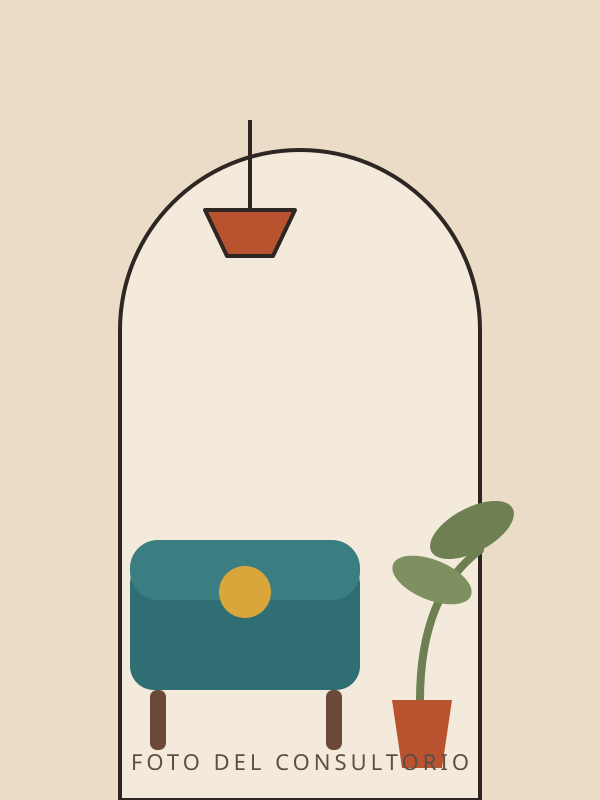

Ansiedad y estrés
Pensamientos que no paran, tensión en el cuerpo, dificultad para dormir o la sensación de estar siempre alerta. Trabajamos para bajar el volumen y recuperar el descanso.
- Ataques de pánico
- Estrés laboral
- Preocupación constante
Consulta presencial y en línea
Psicoterapia para adultos que viven con ansiedad, tristeza persistente o una sensación constante de estar al límite. Presencial en Querétaro y en línea desde donde estés.
Respondo personalmente, normalmente el mismo día.

Cómo te acompaño
No necesitas estar en crisis para empezar. Estas son las razones por las que más gente llega a consulta.
Pensamientos que no paran, tensión en el cuerpo, dificultad para dormir o la sensación de estar siempre alerta. Trabajamos para bajar el volumen y recuperar el descanso.
Cuando algo perdió sentido, cuesta levantarse o una pérdida sigue doliendo más de lo que crees que "debería". Le damos lugar a eso, sin prisa.
Relaciones que se repiten, dificultad para poner límites o esa voz interna que nunca está conforme. Revisamos de dónde viene y cómo cambiarla.
La misma terapia, por videollamada. Útil si vives fuera de Querétaro, viajas seguido o simplemente prefieres tu propio espacio.

Sobre mí
Soy psicóloga clínica y llevo más de ocho años acompañando a adultos que llegan agotados de sostenerlo todo. Estudié en la Universidad Autónoma de Querétaro y me formé en terapia cognitivo-conductual y enfoque humanista.
Elegí esta profesión porque crecí viendo lo caro que sale callar lo que duele. En consulta no vas a encontrar un diagnóstico apresurado ni consejos de manual: vas a encontrar a alguien que escucha en serio, que pregunta lo que hay que preguntar y que trabaja contigo a tu ritmo.
Trabajo sobre todo con personas de entre 20 y 45 años, y me interesa especialmente el momento en que alguien decide dejar de vivir en automático.
Valeria
Cómo empezamos
Para que sepas exactamente qué va a pasar antes de escribir.
Por WhatsApp, con la frase que puedas. No necesitas explicar todo ni tener claro el motivo. Te respondo yo, no un asistente.
Cincuenta minutos para conocernos. Me cuentas qué te trae, resolvemos dudas y definimos si soy la persona indicada para acompañarte.
Acordamos objetivos claros y una frecuencia realista. Revisamos avances cada cierto tiempo: la terapia tiene un principio y también un final.
Preguntas frecuentes
Si tienes una duda que no está aquí, escríbeme. Preguntar no compromete a nada.
Cada sesión dura 50 minutos y tiene un costo de $000 MXN, igual en consultorio que en línea. Acepto transferencia y efectivo. Si el costo es un obstáculo, dímelo: manejo algunos espacios a cuota reducida.
Al inicio suele ser una vez por semana, porque ayuda a tomar impulso. Conforme avanzamos, muchas personas pasan a sesiones cada quince días. Lo definimos juntos y se puede ajustar.
Sí. Todo lo que ocurre en sesión está protegido por el secreto profesional y el código ético de la psicología. Las únicas excepciones son las que marca la ley: riesgo grave para tu vida o la de otra persona.
Para la mayoría de los motivos de consulta, sí. La evidencia muestra resultados equivalentes a los presenciales. Sólo necesitas conexión estable y un lugar donde puedas hablar sin interrupciones.
No hace falta tocar fondo. Si algo te pesa desde hace semanas, si estás repitiendo un patrón que no te gusta o si simplemente quieres entenderte mejor, es motivo suficiente. La primera sesión también sirve para resolver esta pregunta.
Puedes reprogramar sin costo avisando con al menos 24 horas de anticipación. Con menos tiempo, la sesión se cobra, porque ese espacio quedó reservado para ti.
El consultorio
Un espacio tranquilo, privado y con estacionamiento. Toca el mapa para moverlo, o abre la ruta directo en tu app favorita.
Dirección
Av. Ejemplo 123, interior 4
Col. Centro
Santiago de Querétaro, Qro.
76000
Edificio de fachada blanca, junto a la farmacia.
Consultorio
No se pudo cargar el mapa.
Abre la ubicación directamente:
Escríbeme por WhatsApp y te respondo personalmente. Sin formularios, sin listas de espera y sin compromiso de agendar.